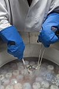

cryopreservation

Definition: Cryopreservation or cryoconservation is a process where biological material - cells, tissues, or organs - are frozen to preserve the material for an extended period of time. At low temperatures (typically −80 °C (−112 °F) or −196 °C (−321 °F) using liquid nitrogen) any cell metabolism which might cause damage to the biological material in question is effectively stopped. Cryopreservation is an effective way to transport biological samples over long distances, store samples for prolonged periods of time, and create a bank of samples for users. Molecules, referred to as cryoprotective agents (CPAs), are added to reduce the osmotic shock and physical stresses cells undergo in the freezing process. Some cryoprotective agents used in research are inspired by plants and animals in nature that have unique cold tolerance to survive harsh winters, including: trees, wood frogs, and tardigrades.
Source: Wikipedia
Wikipedia Page
Wikidata Page